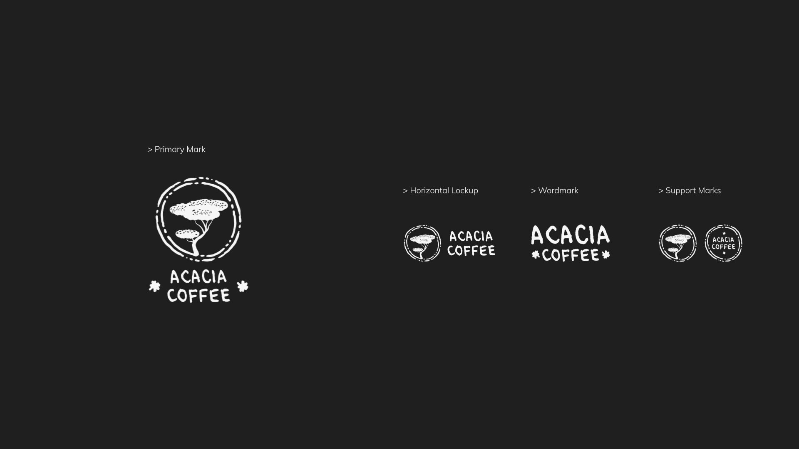
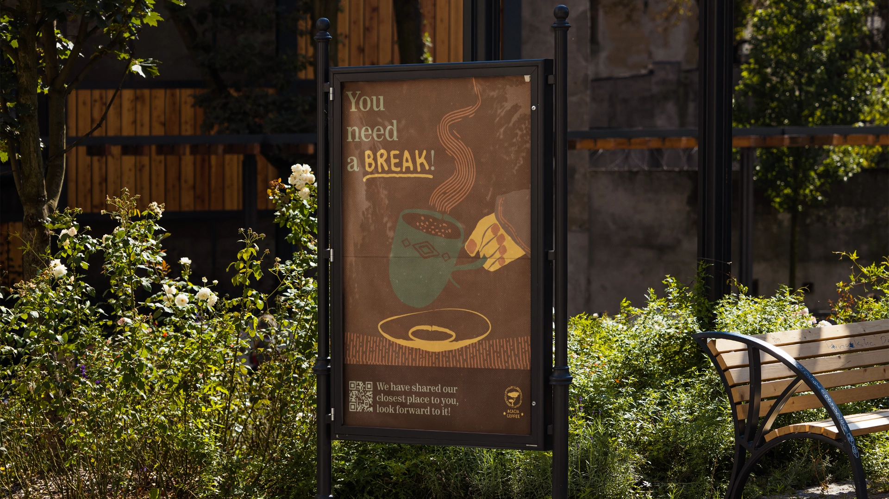
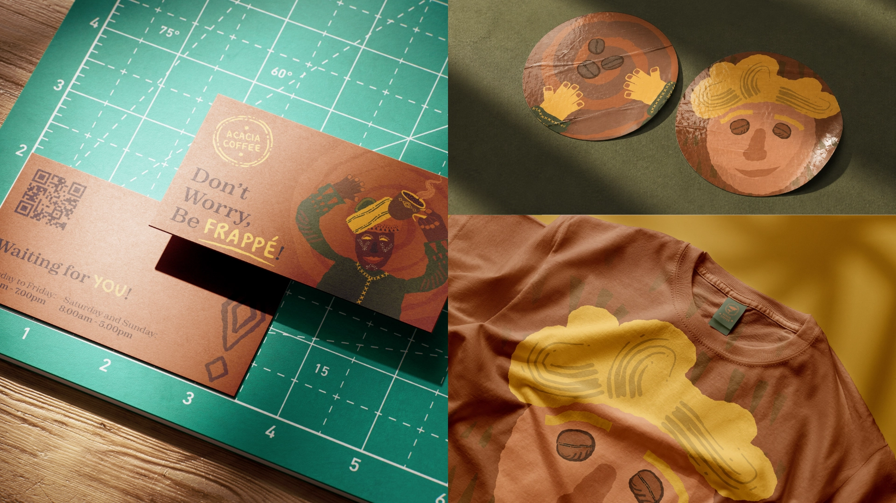
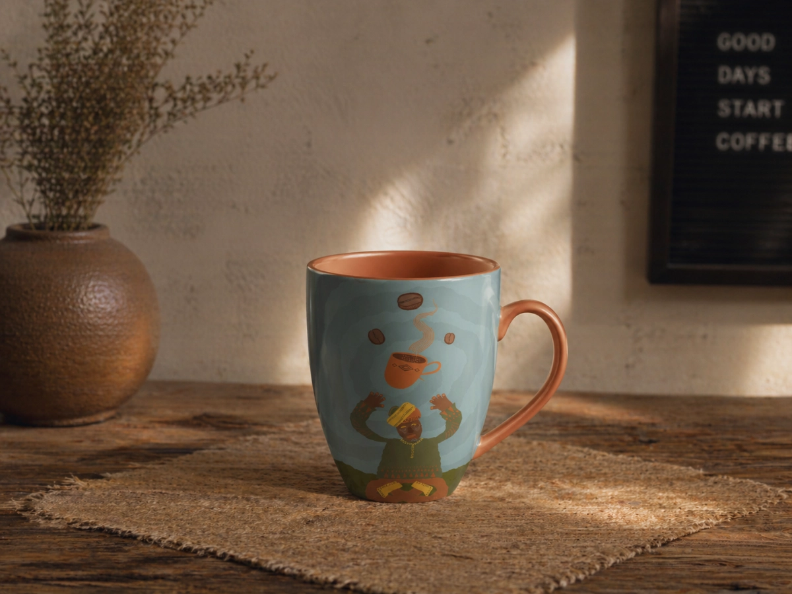

acacia coffee
Warmth over elitism.
//
Identity System
Packaging Direction
Brand Expression

Beyond Routine Coffee.
Many coffee brands are built for speed. Acacia was built for staying.
The modern coffee market often prioritizes speed, efficiency, and visual minimalism. Many spaces feel transactional, built for quick visits rather than meaningful time spent.
Acacia was created as an alternative: a warmer, more human coffee brand designed for pause, conversation, focus, and comfort. Instead of sterile aesthetics, the identity uses character-led illustrations, natural imperfections, and inviting visual language to create emotional connection and repeatability.

Recognition, Distilled.
The identity was designed for immediate recognition and emotional warmth. By directly referencing the acacia tree, the mark creates instant association, while hand-drawn lines and playful lettering give the brand a more human, handcrafted presence.



Designed to Talk Back.
Many coffee brands stop communicating after the order is placed.
Acacia extends the experience through playful language, warmth, and small moments of personality across menus, packaging, and social content.




System Outcomes
Core identity assets
- Primary mark, support graphics and two illustrated characters
Physical touchpoints
- Packaging, cups, stickers, signage, tote bag and apparel
Brand voice system
- Short copy lines and character-led moments for packaging and social use
Repeatable recognition
- A warm visual language built around illustration, tone and everyday coffee rituals